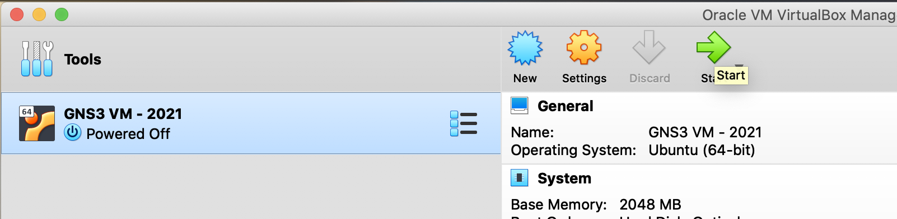
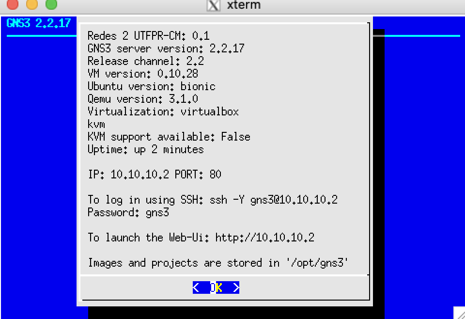
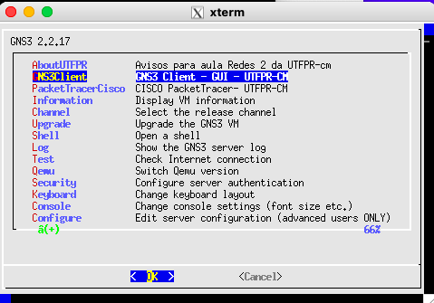
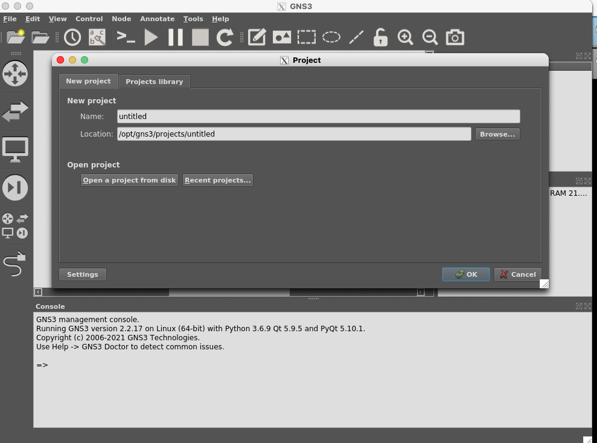

Configuração do MacOS para acessar o ambiente gráfico do Linux via SSH
UTFPR - Universidade Tecnológica Federal do Paraná, campus Campo Mourão
Autores: Prof. Dr. Luiz Arthur Feitosa dos Santos, Rafael Rampim Soratto, Lucas Santana Rocha e Isabela De Almeida Gantzel
E-mail: luizsantos@utfpr.edu.br
Segue como configurar o MacOS para acessar o ambiente gráfico do Linux via SSH. O intuito principal deste texto é mostrar aos alunos do curso de BCC (Bacharelado em Ciência da Computação) da UTFPR de Campo Mourão, como acessar o GNS3 e o PacketTracer a partir de uma VM (Máquina Virtual) disponibilizada para as disciplinas de Redes de Computadores e Segurança. Mas tais passos podem ser adaptados para outras situações, não só para acessar VMs.
Tal VM tem o GNS3 cliente/servidor e o PacketTracer da CISCO e devem ser acessados via SSH a partir da máquina hospedeira/real.
Baixando os arquivos
É necessário baixar os seguintes arquivos:
- Virtual Box - que é o gerenciador de VM;
- VM do GNS3/PacketTracer que está disponível no Moodle das disciplinas de Redes1, Redes 2 ou Segurança;
- XQuartz - que será responsável pela reprodução do ambiente gráfico do Linux (ambiente X) no MacOS.
Instalação
- Instale o Virtual Box;
-
Localize o arquivo
.ovada VM, esse já irá configurar e instalar apropriadamente a VM no Virtual Box.
- Após isso inicie a VM e assim que ela estiver plenamente ligada verifique qual IP foi atribuído à interface
eth1- essa interface deve estar configurada no Virtual Box comohostonlyoubridge. A imagem a seguir mostra a VM da disciplina, que apresenta o IP em questão na tela inicial, neste exemplo é o 10.10.10.2;

Atenção, o IP da VM deve ser “pingável”, se não for possível pingar da máquina real/hospedeira o IP da VM, pode ser que o segundo adaptador de rede da VM, no Virtual Box, esteja configurada como
NATe nãohostonlyoubridge. Neste caso desligue a VM e vá na configuração de rede da VM, no Virtual Box e configure comohostonlyoubridge. Em caso de duvidas a respeito do IP atribuído à VM, entre no console da VM no próprio Virtual Box, pressioneCrtl+C, para ter acesso ao shell do Linux e execute o comandoifconfig eth1e verifique o IP que está nesta interface, novamente tal IP deve ser “pingável” do hospedeiro para a VM, caso isso não ocorra há algo errado. - Após isso inicie a VM e assim que ela estiver plenamente ligada verifique qual IP foi atribuído à interface
- Instale o XQuartz e inicie tal aplicativo. Desta forma aparecerá um ícone na bandeja de ícones de aplicativos, referente ao XQuartz em execução. Agora clique neste ícone a peça para abrir um terminal/shell;
- No terminal aberto pelo XQuartz execute o comando
ssh -X gns3@10.10.10.2, então digite a senha do usuário gns3, que no caso da VM da disciplina também égns3. Na sequência, se a senha estiver correta, será aberto um menu que permite dentre outras coisas, iniciar o GNS3 cliente ou o PacketTracer. Assim, basta escolher um desses e a janela gráfica desses aplicativos aparecerá na máquina hospedeira, como se fosse um aplicativo desta, mas na verdade está vindo do servidor SSH (no caso a VM).

Na imagem a seguir, por exemplo, está em execução o GNS3 no MacOS, via SSH com o Linux:

É possível executar qualquer comando gráfico via console. No exemplo da VM da disciplina, seria possível dar um
Crtl+C, acessar o shell da VM e digital algo comowireshark,gedit,firefoxou qualquer aplicativo gráfico que esteja instalado, e tal aplicativo será exibido na tela do hospedeiro, no caso deste texto, do MacOS.
Assim, é possível acessar via MacOS programas no Linux através de SSH. Neste contexto utilizamos a ideia de acessar uma VM, mas com basicamente com os mesmos passos, seria possível acessar qualquer host Linux devidamente configurado com servidor SSH e ambiente gráfico.
Não fez parte do escopo deste tutorial explicar a configuração necessária no servidor SSH para que este envie o ambiente gráfico do Linux, mas essa configuração existe e é necessária. Neste caso a VM já estava com toda essa configuração pronta.